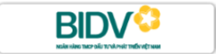

Công ty TNHH Cấp Thoát Nước Mỏ Cày đã liên kết với các ngân hàng dưới đây. Bà con đang có tài khoản ở ngân hàng nào trong số này thì đóng tiền nước ngay trong app ngân hàng đó, không cần nhớ số tài khoản của công ty.

Ngân hàng khác vẫn đóng được, bằng cách chuyển khoản thẳng vào tài khoản công ty theo hướng dẫn ở phần dưới.
Đây là cách gọn nhất vì app tự tìm ra hóa đơn và tự điền số tiền, bà con không phải gõ tay số nào ngoài mã khách hàng.
Dùng cách này khi ngân hàng của bà con chưa có sẵn dịch vụ hóa đơn nước, hoặc bà con muốn chuyển từ tài khoản của người khác.
| Đơn vị thụ hưởng | Công ty TNHH Cấp Thoát Nước Mỏ Cày |
|---|---|
| Ngân hàng | BIDV Chi nhánh Bến Tre, Phòng giao dịch Mỏ Cày |
| Số tài khoản | 7290023381 |
| Nội dung | Mã khách hàng, cách một khoảng trắng, rồi tới kỳ hóa đơn |
Số tiền chuyển đúng bằng số tiền trên hóa đơn của kỳ đó. Chưa biết số tiền thì bà con tra trước trên website, xem mục tra cứu tiền nước.
Nội dung chuyển khoản là chỗ công ty dựa vào để biết tiền của nhà nào, kỳ nào. Ghi sai thì việc đối soát chậm lại, có khi phải gọi hỏi lại bà con.
Cú pháp: Mã khách hàng rồi tới chữ K và kỳ hóa đơn.
| Trường hợp | Nội dung ghi |
|---|---|
| Mã 22542, đóng kỳ 08/2026 | 22542 K08-2026 |
| Mã 01595, đóng kỳ 07/2026 | 01595 K07-2026 |
| Đóng gộp nhiều kỳ cùng lúc | Ghi mã khách hàng và số kỳ, ví dụ 24913 5 KY |
Bà con không phải gõ tay số tài khoản, số tiền hay nội dung. Website công ty tạo sẵn mã QR đã gắn đủ ba thông tin đó.
Chi tiết từng bước có trong bài hướng dẫn thanh toán bằng mã QR.
Chỉ cần mã khách hàng là ra kỳ hóa đơn, số tiền và mã QR chuyển khoản.
Tra cứu tiền nước →| Lỗi | Hậu quả | Cách tránh |
|---|---|---|
| Bỏ trống hoặc ghi sai nội dung | Công ty khó biết tiền của nhà nào, đối soát chậm | Ghi đúng mã khách hàng và kỳ theo cú pháp ở trên |
| Mất số 0 đứng đầu mã | Tra ra nhầm hộ hoặc không tìm thấy | Nhập nguyên mã như in trên hóa đơn, giữ các số 0 đầu |
| Chuyển thiếu tiền so với hóa đơn | Kỳ đó vẫn còn nợ phần thiếu | Chuyển đúng số tiền, hoặc quét mã QR để app tự điền |
| Chuyển vào tài khoản cá nhân nào đó | Tiền không vào công ty | Chỉ chuyển vào tài khoản mang tên Công ty TNHH Cấp Thoát Nước Mỏ Cày |
Số tài khoản 7290023381 tại BIDV Chi nhánh Bến Tre, Phòng giao dịch Mỏ Cày, chủ tài khoản là Công ty TNHH Cấp Thoát Nước Mỏ Cày. Bà con nên đối chiếu tên người thụ hưởng hiện trên app trước khi bấm xác nhận.
Vẫn đóng được. Bà con chuyển khoản thẳng vào tài khoản công ty và ghi đúng nội dung gồm mã khách hàng và kỳ hóa đơn, hoặc quét mã QR trên website để app tự điền đủ thông tin.
Ghi mã khách hàng, cách một khoảng trắng, rồi tới chữ K và kỳ hóa đơn. Ví dụ mã 22542 đóng kỳ 08/2026 thì ghi 22542 K08-2026. Không cần ghi tên và địa chỉ.
Giao dịch được đối soát theo phiên trong giờ làm việc nên chưa cập nhật ngay. Bà con đợi qua ngày làm việc kế tiếp, nếu vẫn còn nợ thì gọi (0275) 3662 893 kèm theo biên lai chuyển khoản.
Được. Bà con tra cứu trên website để biết tổng số tiền của tất cả các kỳ còn nợ, chuyển đúng tổng đó và ghi nội dung gồm mã khách hàng kèm số kỳ. Trang tra cứu cũng có nút thanh toán gộp toàn bộ công nợ.
Được. Ai chuyển cũng được, miễn là đúng số tài khoản công ty, đúng số tiền và ghi đúng mã khách hàng của nhà cần đóng trong nội dung.